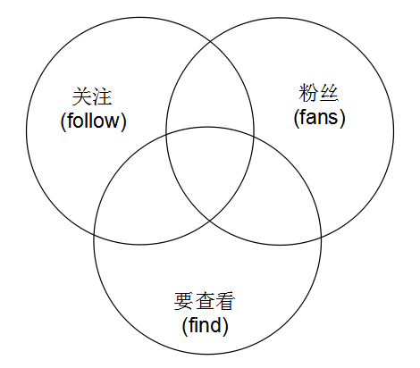

在微博中，每一个用户都会有一个关注列表，一个粉丝列表。用户可以查看自己的关注，粉丝列表，也可以查看别人的关注，粉丝列表。并且，要展示列表里每个人与当前查看者的关注状态。状态的可能性就是上面讲到得四种关系状态。
问题可以分两种情况来看：
这种情况相对简单一点。比如看自己的关注列表，列表里的人的与自己的关系状态不可能是“无关系”和“粉丝”。只可能是“关注”和“双向关注”。同样，粉丝列表也只有两种状态。
这是最复杂的情况，假如看别人关注列表，列表里的人和自己可能有上述全部四种关系状态。

如上图所示。左边的圆表示用户的关注列表，右边的圆表示粉丝列表，下边的圆表示的是要查看的列表（集合）。分别用follow, fans, find来表明这三个集合。
当查看自己的列表时，其实表示find集合是上面集合中某一个的子集。例如查看自己粉丝，表示find是fans的子集，查看自己的关注，表示find是follow的子集。
查看别人的列表时，此时图中产生了三个集合的交集。要查询集合中的用户可能是在你的粉丝，关注集合中，也可能不在。就是说可能是任何一种关系状态，问题的根本就是，我们要计算出每一个用户与当前用户的关系状态。要求解四种关系状态，我们必然要求出图中下部分的三个小交集。
不在这三个小交集中的用户就是无关系状态的用户。
假如我们采用如下一套命名:
关注集合
follow:userID粉丝集合
fans:userID互粉集合(临时)
fofa:userID要查询的集合(临时)
find:userID要查询的集合与我的关注交集(临时)
find_inter_follow:userID要查询的集的与我的粉丝交集(临时)
find_inter_fans:userID要查询的集合与我的互粉交集(临时)
find_inter_fofa:userIDfind中其他就是未关注
score用来存储关注的时间，每个用户存储两个集合。follow:userID存储用户的关注，fans:userID存储用户的粉丝。于是我们可以设计一个函数来求出这些状态的集合。
函数返回：
"findSet" => $findSet, //要查询的集合
"fofaSet" => $fofaSet, //互粉的集合
"findInterFollowSet" => $findInterFollowSet, //要查询的集合与我的关注交
"findInterFansSet" => $findInterFansSet //要查询的集的与我的粉丝交
求出以上四个集合，就可以进行关系状态判断，先判断是否互粉，如果不是互粉，再判断是否是我关注的，如果不是，再判断是否是我的粉丝。如果都不是就是无关系。这样就能把状态求出来了。
/*
* userID:当前用户id
* targetUserID: 被查看的人的id
* findType: 查看的是哪个列表
* findStart: 分页查看的列表开始的位置
* findEnd: 分页查看的列表结束的位置
*/
function getChunkSets($redis, $userID, $targetUserID, $findType, $findStart, $findEnd) {
$fansKey = "fans:" . $userID;
$followKey = "follow:" . $userID;
$findKey = "find:" . $userID;
$targetKey = $findType. ":" . $targetUserID;
$fofaKey = "find_inter_fofa:" . $userID;
$findInterFollowKey = "find_inter_follow:" . $userID;
$findInterFansKey = "find_inter_fans:" . $userID;
//找出要查询的集合元素
$findSet = $redis->zRevRange($targetKey, $findStart, $findEnd, TRUE);
//要查询的集合与我的关注交
$findInterFollowSet = array();
//要查询的集的与我的粉丝交
$findInterFansSet = array();
//先清掉临时集合
$redis->del($findKey);
$redis->del($fofaKey);
$redis->del($findInterFollowKey);
$redis->del($findInterFansKey);
//存起来
foreach ($findSet as $uid => $score) {
$redis->zAdd($findKey, $score, $uid);
}
//求互粉集合
if ($userID != $targetUserID) { //看别人
$redis->zInter($fofaKey, array($findKey, $fansKey, $followKey));
/*
* 如果不是看自己的列表，还要求
* 1： 要查询的集合与我的关注交
* 2： 要查询的集的与我的粉丝交
*/
$redis->zInter($findInterFollowKey, array($findKey, $followKey));
$redis->zInter($findInterFansKey, array($findKey, $fansKey));
$findInterFollowSet = $redis->zRevRange($findInterFollowKey, 0, -1);
$findInterFansSet = $redis->zRevRange($findInterFansKey, 0, -1);
} else {
if ($findType == "fans") { //自己看粉丝列表
$redis->zInter($fofaKey, array($findKey, $followKey));
} else if ($findType == "follow") { //看自己关注列表
$redis->zInter($fofaKey, array($findKey, $fansKey));
}
}
//互粉集合
$fofaSet = $redis->zRevRange($fofaKey, 0, -1);
return array(
"findSet" => $findSet, //要查询的集合
"fofaSet" => $fofaSet, //互粉的集合
"findInterFollowSet" => $findInterFollowSet, //要查询的集合与我的关注交
"findInterFansSet" => $findInterFansSet //要查询的集的与我的粉丝交
);
}
以上函数已经求出了所需要的集合，然后就是关系状态判断了。
/*
* isSelf: 是否查看自己的列表
* findType: 查看的是粉丝还是关注列表 1： 关注， 2: 粉丝
* userInfoArr: 用户详细信息数组
*/
function getUserInfoList($isSelf, $findType, $userInfoArr, $findSet, $fofaSet, $interFansSet, $interFollowSet) {
$userInfoList = array();
foreach($findSet as $userID => $favoTime) {
if(!in_array($userID, array_keys($userInfoArr))) continue;
$userInfo = new UserInfo($userInfoArr[$userID]);
$userInfo = $userInfo->format();
if(in_array($userID, $fofaSet)){
$userInfo['favoFlag'] = 3; //互相关注
} else {
if($isSelf) {
$userInfo['favoFlag'] = $findType;
} else {
if(in_array($userID, $interFansSet)) {
$userInfo['favoFlag'] = 2; //我的粉丝
} else if(in_array($userID, $interFollowSet)) {
$userInfo['favoFlag'] = 1; //我的关注
} else{
$userInfo['favoFlag'] = 0; //无关系
}
}
}
$userInfo['favoTime'] = $favoTime;
array_push($userInfoList, $userInfo);
}
return $userInfoList;
}